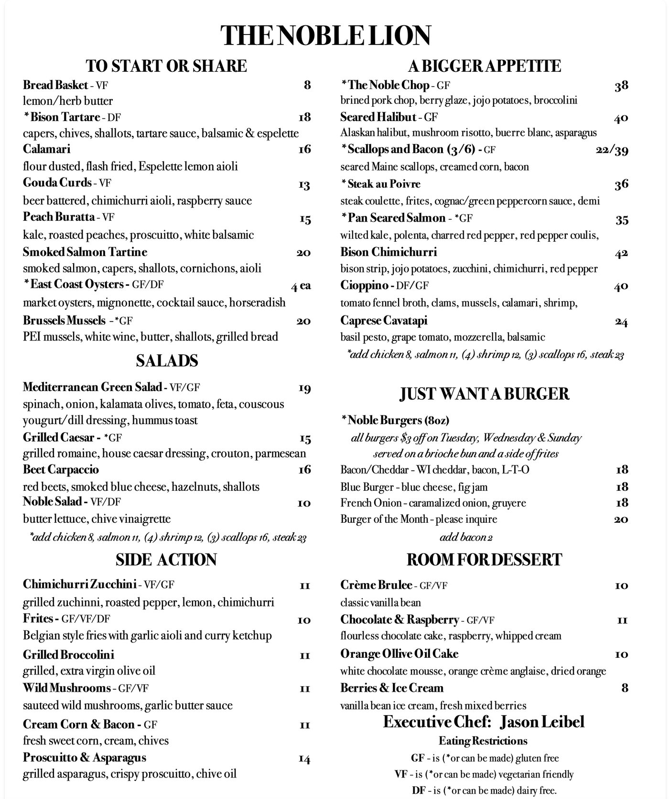

The short version
Victoria, Minnesota is a town of roughly twelve thousand in Carver County, about half an hour west of Minneapolis. For years its downtown had one obvious hole in it — a small, central, empty parcel on a street that is otherwise always full.
Two things now sit on either side of that fact. The Noble Lion proved people will drive to Victoria for a serious dinner. Harland Chicken & Fish, from a veteran Twin Cities restaurateur who could have opened anywhere, is a professional confirming it with his own money.
I am a realtor here, so read this with that in mind. But the reason I find it interesting has nothing to do with a listing. People who open restaurants are professional forecasters of where a place is going. When one of the best of them picks your downtown, that is information.
It starts with dinner
The Noble Lion sits at 7940 Victoria Drive, in the middle of downtown. It calls itself elevated American with a French influence, which in practice means a scratch kitchen doing steak au poivre and a French onion burger in the same room. Jason Leibel runs the kitchen.
We went as a family. My daughter, who is five and a half, ordered oysters — and then ordered a second round of three when the first disappeared. Somebody behind the bar decided a kid’s mocktail deserved a fresh sprig of rosemary, which is the sort of detail you cannot put on a menu.
Bison tartare with capers, chives, shallots and Espelette. East Coast oysters. Scallops and bacon over creamed corn. This is not small-town-restaurant food with a small-town-restaurant apology attached to it. It is the reason people who move out here stop driving into the city on a Friday.
And that matters more than a nice night out, because demand has to be proven before anyone will build on top of it. The Noble Lion did the proving.
So why was there still a hole in the middle of downtown?
If you have spent any time in Victoria you already know the strange thing about it. The downtown is small — a few blocks — and it is never empty. Erik put it better than I could:
“Never. It is always busy. Packed, always. It can be a Monday at three o’clock and it is packed at all times.” Erik Forsberg — 2:22:13
Parking is the tell. There is never enough of it, in a town nobody thinks of as busy. And yet right in the middle of all that, for years, there was a gap. A sliver.
A blizzard, December 2022
I had been trying to get time with Erik Forsberg for weeks. The only reason we finally sat down is that it was seventeen below and he physically could not leave his house — a Pillsbury estate out in Minnetrista, one of the old lake-country houses.
I know that house well. I am the one who moved him into it. He had lived in Loring Park for twelve or thirteen years, and somewhere around forty-four minutes into the tape he mentions leaving it and I say, out loud and without much humility, that I am quite proud of that. So when he talks later about escaping the city, I have a small stake in the sentence.
We talked for two and a half hours. Near the end I described that sliver to him — central, surrounded by life, never enough parking, a town that seemed to be craving more — and I asked whether he knew anything about it.
“All right, I got a thing. It’s something that is going to recreate something out in this side of town that is going to be more of a Stillwater experience for the west side, which I am excited for.” Erik Forsberg — 2:17:42
That is Harland, described years before it had a name, by the man building it. If you know Stillwater — the river, the hotels, the way a small downtown became a destination — you know exactly what he meant.
Why it matters that it was him
Erik Forsberg has been building rooms in this state for two decades. Devil’s Advocate is the cornerstone — downtown Minneapolis and Stillwater. He has opened, closed, revived and partnered on more concepts than most people try in a career, and he bought his very first restaurant, the Ugly Mug, in the teeth of the 2008 crash. He still calls it one of his greatest successes.
People like that do not pick a town on a feeling. They pick it on rooftops, household income, traffic, and whether a place can carry a room on a Tuesday.
And here is the part I want to be careful about, because it would be easy to spin. Erik does not think downtown Minneapolis is finished. He says so plainly in this interview, and he was opening a restaurant there the same week we filmed. What he says is more complicated, and more human:
“I’m so dedicated to Minneapolis, even though Minneapolis is sort of like an abusive relationship where I feel like sometimes I give and give and give… it’s a one-way street. I give and it doesn’t give back.” Erik Forsberg — 2:21:08
And then, in the same breath:
“I can see a scenario in which we at some point are just developing here in the west, and developing over in Stillwater.” Erik Forsberg — 2:21:39
That is not a man fleeing a city. That is a man deciding where the next thing happens. He is loyal to Minneapolis and he is building out here, and the second fact is not an insult to the first. It is just where the energy is going.
Victoria has always been a place where somebody bet early
The line that stayed with me came a few minutes later, and it is the reason this guide exists at all:
“It’s a tremendous community… some old school players in it, but a lot of new people coming into it… it’s sort of a frontier town in many ways. We’re defining what Victoria is going to look like for the next hundred years.” Erik Forsberg — 2:22:34
He follows it immediately with a line about riding on the heels of his great-great-grandfather, Isaac Staples — the lumber baron who founded Stillwater. Whatever you make of family lore, the instinct is real and it runs in the family. His father left a downtown law firm for the north woods when everyone told him it was madness.
And it runs in this ground, too. In 1859 a man named Wendelin Grimm arrived in Carver County from Germany with a small bag of alfalfa seed. Everyone knew alfalfa could not survive a Minnesota winter. He spent fifteen winters saving seed from the few plants that lived, and ended up with the first winter-hardy alfalfa in North America — a plant that changed farming across the northern half of the continent. His farmstead still stands, in Carver Park Reserve on the edge of town, on the National Register.
Fifteen winters on an idea nobody believed in. A hundred and sixty-odd years later, somebody is building a restaurant on the last empty lot downtown and talking about the next hundred years.
Victoria keeps attracting the same kind of person. That is the actual story of this town, and it is a better reason to look at it than any school rating.
So what does that mean if you’re thinking about moving here?
Honestly: less than a realtor would usually claim, and more than nothing.
A restaurant opening does not raise your home value. But operators of Erik’s caliber are unusually good at reading a place two or three years ahead of everyone else, and they are spending their own money on the answer. When one of them looks at a downtown and describes it as unfinished and up for grabs, that is worth more than a forecast from someone with nothing at stake.
The practical trade in Victoria hasn’t changed. Buying here instead of Excelsior or Shorewood means you are not paying for a Lake Minnetonka address — you are trading it for room. Generally more house and more lot for the same money, District 112 schools, and Carver Park Reserve on the edge of town instead of a dock out back. Out here the lakes are somewhere you go, not something you pay a premium to look at.
What is changing is the part people used to give up in that trade: somewhere to actually go on a Friday. That is the thing downtown Victoria is quietly fixing.
The full interview, mapped
Two and a half hours is a lot to ask of anyone, and most of it has nothing to do with Victoria. If you came here because you searched his name, these are the moments worth your time — each one opens at the exact second.
- 0:12:01His father, Jerry — an intellectual property attorney who left a downtown DC firm to practice from northern Minnesota decades before that was normal. “My dad was a pioneer… everybody thought he was crazy.”
- 1:51:57The Ugly Mug — his first restaurant, bought straight into the 2008 crash.
- 1:52:51“A bad purchase or a courageous purchase?” — and why he still calls it one of his greatest successes.
- 1:58:32On failing often, on purpose. “Have fun with failure.”
- 2:00:08Why Devil’s Advocate is called that. “Our saying in the company is: challenge what you think you know.”
- 2:13:14His family named Stillwater — Isaac Staples, lumber baron, town founder.
- 2:15:01“I literally escaped from downtown Minneapolis… 2020.” And why he is not leaving the house he landed in.
- 2:17:42“All right, I got a thing.” The Victoria reveal.
- 2:21:08Minneapolis as “an abusive relationship… a one-way street” — and staying anyway.
- 2:22:34“It’s sort of a frontier town in many ways.” The best ninety seconds in the interview.
- 2:24:13Why he thinks building an apartment building is still hospitality.
- 2:26:00The closing statement. “Somebody who just enjoys breaking bread with good people.”
The practical bits
The Noble Lion — 7940 Victoria Drive, Victoria, MN 55386. Elevated American with a French influence; there’s also a casual cocktail lounge, The Lion’s Den. Closed Mondays; dinner service from 4pm the rest of the week. Executive chef: Jason Leibel.

Harland Chicken & Fish — downtown Victoria, from Erik Forsberg. An East Coast–meets–Midwest room. Check their listing for current hours.
Wendelin Grimm Farmstead — in Carver Park Reserve, on Grimm Road. Listed on the National Register of Historic Places in 1974. Worth the walk.
I am Geoffrey Serdar, a realtor with Serdar+Partners at Compass. I live in Excelsior, I work Lake Minnetonka and Carver County, and I have served more than 360 families. Erik Forsberg is a friend and a client, and I sold him his home — so read this knowing I like the man. I have no financial interest in Harland, The Noble Lion, or any business named here. Everything Erik says above is linked to the second he says it, so you can check me. Details change; call the restaurants before you drive.